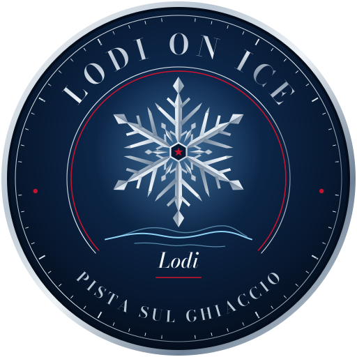

Lodi on Ice – installazione sulla cassa
Per la cassa touch con Windows e stampante incorporata. Circa 15 minuti, una volta sola.
Installa Google Chrome
Da google.com/chrome → Scarica → Installa. (Serve Chrome: stampa i biglietti senza chiedere conferma.)
Stampante della cassa come predefinita
Start → Impostazioni → Bluetooth e dispositivi → Stampanti e scanner
Spegni "Consenti a Windows di gestire la stampante predefinita", poi tocca la stampante della cassa (quella che usa MIMAS) → Imposta come predefinita.
Nelle "Preferenze stampa" della stampante controlla che la carta sia 80 mm (o 58 mm) e il taglio automatico acceso.
Crea l'icona "Lodi on Ice" sul desktop
Chiudi tutte le finestre di Chrome. Tasto destro sul desktop → Nuovo → Collegamento e incolla:
"C:\Program Files\Google\Chrome\Application\chrome.exe" --kiosk-printing --user-data-dir=C:\LodiOnIce --app=https://vinottileonardo-a11y.github.io/pista-ghiaccio-lodi/
Avanti → nome: Lodi on Ice → Fine.
"--kiosk-printing" = stampa subito sulla stampante predefinita, senza finestra. "--user-data-dir" = cartella tutta sua: i dati della pista stanno lì.
Avvio automatico all'accensione (consigliato)
Premi Win + R, scrivi shell:startup e Invio: si apre una cartella. Copia lì dentro l'icona "Lodi on Ice".
Schermo sempre acceso e volume
Impostazioni → Sistema → Alimentazione → Schermo e sospensione → Mai (sia per lo schermo che per la sospensione).
Volume di Windows alto e casse/amplificatore collegati: la cassa fa anche gli annunci.
Primo avvio e codice
Apri l'icona Lodi on Ice. La prima volta mostra il codice di questa cassa (tipo K7P2-9QXM): mandalo a Leonardo con il pulsante WhatsApp e incolla il codice che ti rimanda.
Prova di stampa
Nell'app: Impostazioni → Stampa biglietti → 🖨 Stampa un biglietto di prova. Deve uscire subito, senza finestre. Se compare una finestra di stampa, l'icona non è stata aperta con "--kiosk-printing" (rifai il passo 3 con tutte le finestre di Chrome chiuse).
Ogni giorno
Accendi la cassa → si apre Lodi on Ice → AVVIA GIORNATA. Vendi dalla Cassa: tocca i prodotti, poi Contanti / POS / Staff. Escono i biglietti: ingresso con il colore, pinguino, chiave, riepilogo.
La voce chiama i gruppi: "è terminato il tempo dei biglietti ROSSI". A fine giornata: 🌙 Chiudi giornata (stampa la chiusura).
Importante: usa sempre l'icona "Lodi on Ice". Se apri l'app da un Chrome normale, la stampa chiede conferma e i dati non sono gli stessi.